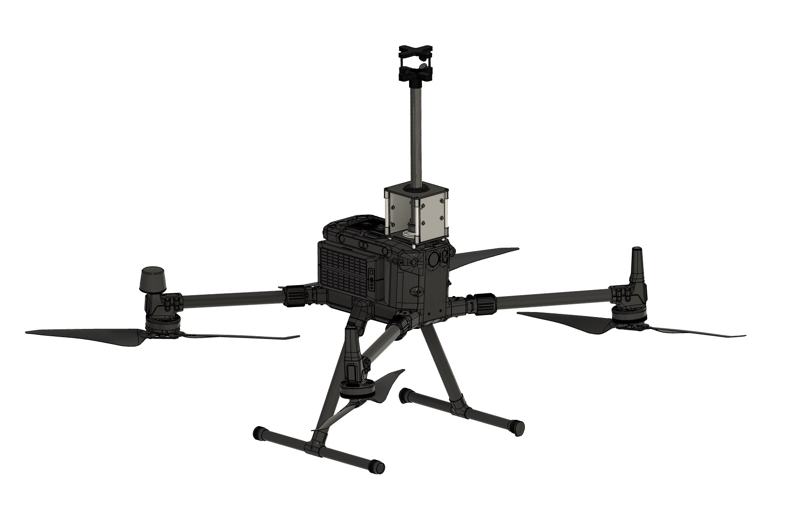
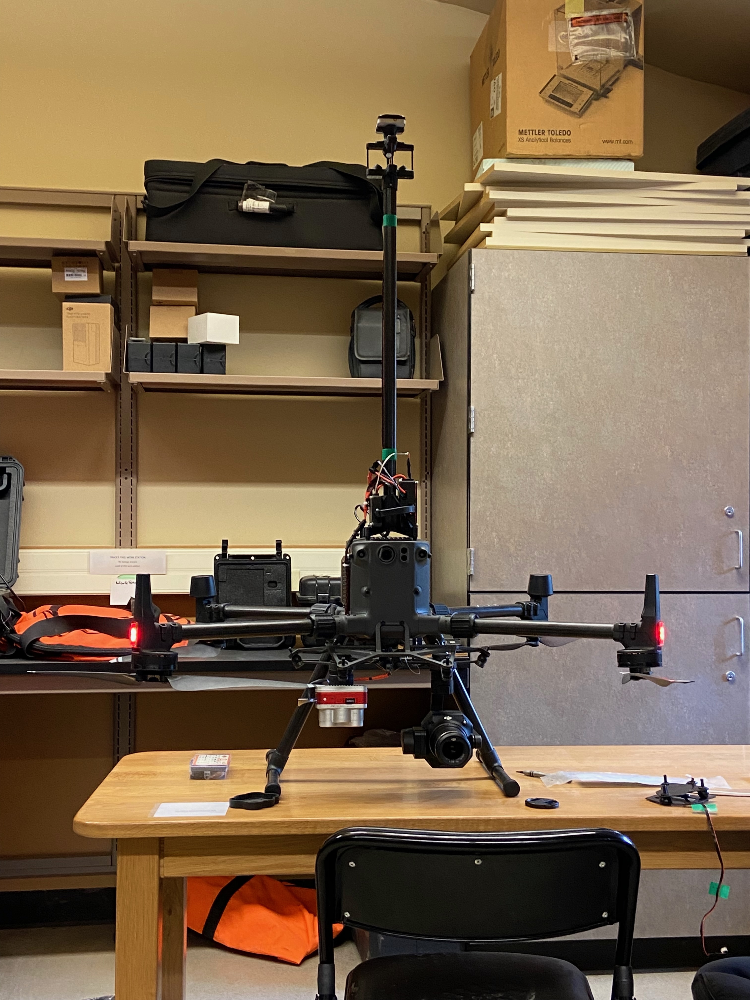
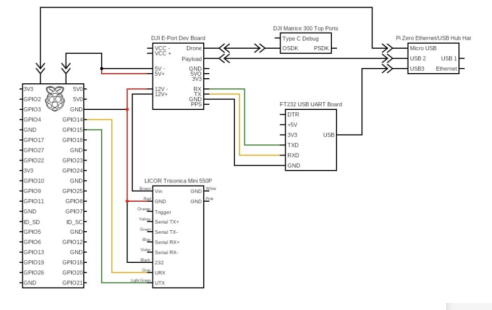
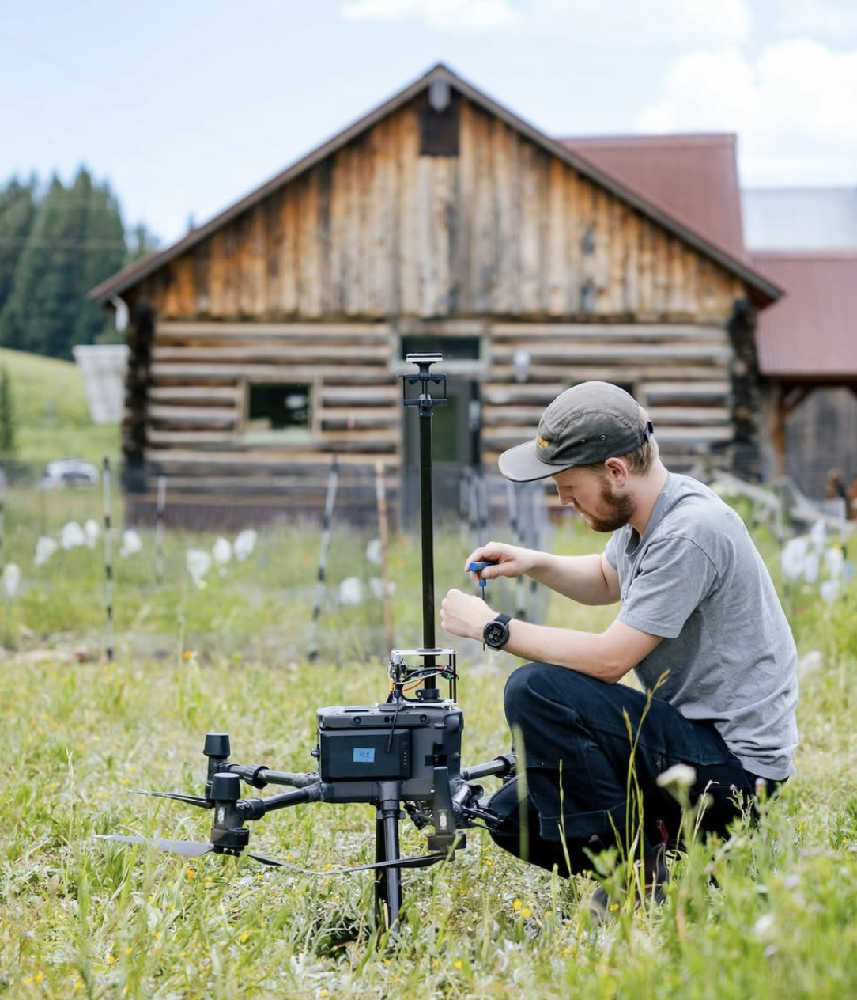

UAV-based remote sensing systems designed for high-alpine field deployment — built to hold up under strict power, weight, and durability constraints while integrating directly into the DJI ecosystem.
High-alpine environments are incredible places to study biology and ecology changes but often involves accessing hard to reach places. While ground level access can be achieved with relative ease, gaining insight about anything into the atmosphere can become a challenge. With the advancement of UAV technology researchers are using them over and over to learn more about what happens as you move further from Earth's surface. Using a DJI Matrice 300 RTK supplied by the Rocky Mountain Biological Laboratory we integrated advanced sensing equipment to gain the ability to collect vital environmental data about the Earth's surface.


Left: CAD overview of the UAV sensor system. Right: initial prototype test flight.
The system can be split into three connected pieces: hardware built to secure and house the sensor/electronics, power system for sensor/electronics, and data strategy that would allow our sensor to talk to the drone.
| HARDWARE | Designed a UAV-mounted sensor housing built to minimize added weight to the drone to maximize flight time and reduce propeller vibration affecting sensor measurements. |
| POWER | Utilized the drone's onboard power connections through of the shelf DJI development cicuitry and custom wiring to sensors and data collection microcontroller. |
| DATA STRATEGY | Developed pathways for a Rasperry Pi microcontroller to talk directly to the drone allowing for remote data collection/monitoring and the ability to pair our sensor with the drone's internal sensors to correct measuements in post. |

<
Left: sensor system wiring diagram. Right: second test flight including data collection.
Delivered a durable, low-power atmospheric sensor system capable of collecting reliable field data utilizing the DJI Matrice 300 RTK platform. We succesfully paired our sensing system to DJI's ecosystem allowing remote data collection/storage on the controller and data correction using the drone's gps and IMU. Finally we minimized harware weight while keeping our sensor undisterbed from propellor wash.